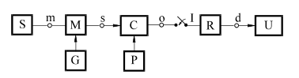
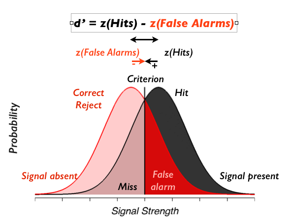
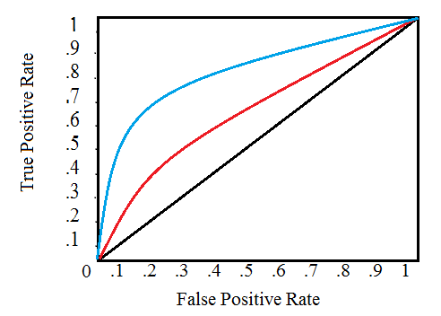
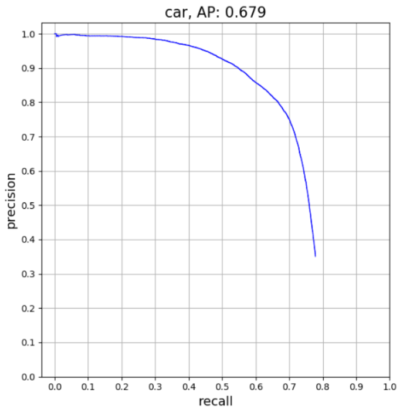
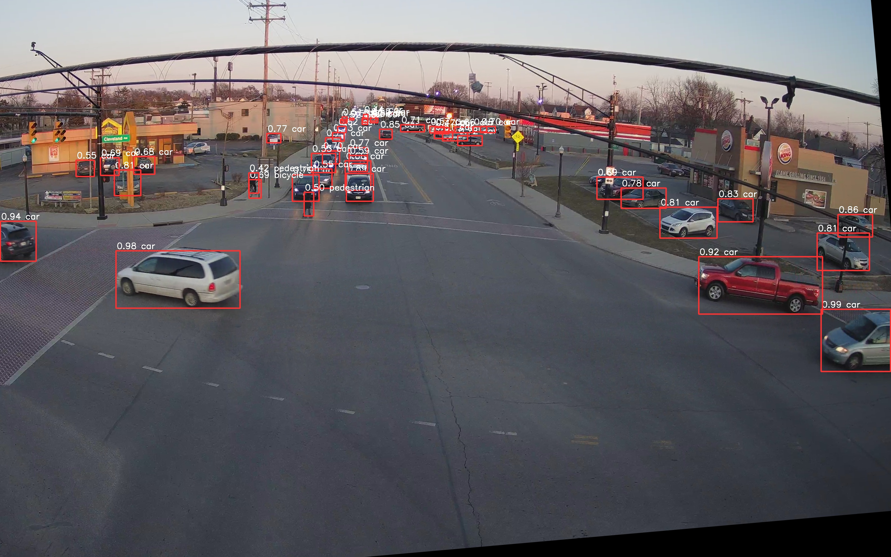

4 Decizie cu un singur eșantion
\[ \newcommand{\grtlessH}{\underset{{H_0}}{\overset{H_{1}}{\gtrless}}} \]
4.1 Introducere
O problemă de decizie înseamnă, pe scurt, a decide între două alternative.
În contextul comunicațiilor, detecția semnalelor înseamnă a decide care semnal este prezent dintre două sau mai multe posibilități, în condițiile în care semnalul este afectat de zgomot aditiv (se adună la semnalul original)
Dificultatea este cauzată de zgomot, care ne poate “păcăli” în a lua o decizie greșită. Se pune așadar problema cum putem decide în mod robust, minimizând efectul zgomotului.
Pentru fixarea ideilor, prezentăm mai jos o schemă de principiu a unui sistem de comunicații..

Elemente:
- Sursa de informație: generează mesajele \(a_n\)
- Generator: generează semnalele diferite \(s_1(t)\),…\(s_n(t)\)
- Modulator: transmite semnalul \(s_n(t)\) aferent mesajului \(a_n\)
- Canal: adaugă zgomot aleator
- Eșantionare: ia eșantioane din semnalul \(s_n(t)\)
- Receptor: decide ce mesaj \(a_n\) s-a fost recepționat
- Utilizator: primește mesajele recuperate
Aplicații:
Transmisii de date cu diverse modulații binare:
- nivele constante de tensiune (de ex. \(s_n(t)\) = constant 0 sau 5V)
- modulație PSK (Phase Shift Keying): \(s_n(t)\) = cosinus cu aceeași frecvență dar faze inițiale diferite
- modulație FSK (Frequency Shift Keying): \(s_n(t)\) = cosinus cu frecvențe diferite
- modulație OFDM (Orthogonal Frequency Division Multiplexing): caz particular de FSK
Detecții radar
Se emite un semnal, iar în cazul unui obstacol, semnalul se reflectă înapoi. Receptorul așteaptă posibilele reflecții ale semnalului emis și decide:
- dacă nu este prezentă o reflecție, se decide că nu există nici un obiect
- dacă semnalul reflectat este prezent, se decide că există un obiect
Problema se poate generaliza în cazul mai multor semnale posibile.
Decizie se poate baza pe un singur eșantion, pe mai multe eșantioane, sau pe observarea întregului semnal continuu pentru un timp \(T\), cazuri care vor fi tratate separat.
4.2 Decizie cu 1 eșantion
Vom analiza mai întâi cel mai simplu scenariu, când la recepție se ia un singur eșantion din semnalul recepționat, și se decide pe baza sa.
Vom porni de la cea mai simplu exemplu posibil.
Să prespunem că se transmite un bit, 0 logic sau 1 logic, folosind două nivele de tensiune constante. De exemplu, pentru 0 logic se poate transmite semnalul \[s_0(t) = 0\] iar pentru 1 logic se poate transmite semnalul \[s_1(t) = 5\]
Pe canalul de transmisie se suprapune zgomot. La recepție se ia un singur eșantion \(r\), și valoarea sa este \(3.5\).
Ce decizie luăm? Am recepționat un 0 sau un 1 logic?
Problema se poate formula mai general astfel:
- Există două mesaje posibile \(a_0\) și \(a_1\) (0 logic sau 1 logic)
- Se transmite un semnal \(s(t)\), care poate fi \(s(t) = s_0(t)\), a transmite \(a_0\), sau \(s(t) = s_1(t)\), pentru a transmite \(a_1\)
- Peste semnal se suprapune zgomotul \(n(t)\)
- La recepție se primește un semnal cu zgomot, \(r(t) = s(t) + n(t)\)
- Problema deciziei: pe baza \(r(t)\), care semnal a fost cel transmis?
Vom introduce următoarea terminologie, cu notațiile aferente.
Există două ipoteze, notate \(H_0\) și \(H_1\):
- \(H_0\): semnalul adevărat este \(s(t) = s_0(t)\)
- \(H_1\): semnalul adevărat este \(s(t) = s_1(t)\)
Receptorul poate lua una din două decizii, notate \(D_0\) și \(D_1\):
- \(D_0\): receptorul decide că semnalul corect este \(s(t) = s_0(t)\)
- \(D_1\): receptorul decide că semnalul corect este \(s(t) = s_1(t)\)
Există 4 situații posibile:
- Rejecție corectă: ipoteza corectă este \(H_0\), decizia este \(D_0\)
- Probabilitatea este \(P_r = P(D_0 \cap H_0)\)
- Se mai numește si “True Negative”
- Alarmă falsă: ipoteza corectă este \(H_0\), decizia este \(D_1\)
- Probabilitatea este \(P_{af} = P(D_1 \cap H_0)\)
- Se mai numește și “False Positive”
- Pierdere: ipoteza corectă este \(H_1\), decizia este \(D_0\)
- Probabilitatea este \(P_p = P(D_0 \cap H_1)\)
- Se mai numește și “False Negative”
- Detecție corectă: ipoteza corectă este \(H_1\), decizia este \(D_1\)
- Probabilitatea este \(P_d = P(D_1 \cap H_1)\)
- Se mai numește și “True Positive”
Terminologia folosită are la origine aplicațiile radar, în care un semnal se emite de către sursă, iar semnalul recepționat poate conține, sau nu, o posibilă reflecție din partea unei ținte. Reflecția e puternic afectată de zgomot, ceea ce ne poate induce în eroare:
- “alarmă falsă” înseamnă ca nu există un obiect în realitate (ipoteza \(H_0\)), dar decizia este greșită și considră că există (\(D_1\)) nu există semnal reflectat (doar zgomot)
- “pierdere” (“miss”, lb.eng.) înseamnă că există un obiect în realitate (ipoteza \(H_1\)), dar decizia este că nu e nimic acolo (\(D_0\))
În general se consideră zgomot aditiv, alb, staționar suprapus peste semnalul original
- aditiv = zgomotul se adună cu semnalul
- alb = eșantioane distincte sunt necorelate
- staționar = are aceleași proprietăți statistice la orice moment de timp
Semnalul de zgomot \(n(t)\) este necunoscut, dar este o realizare a unui proces aleator, pentru care se cunoaște doar distribuția.
La recepție se primește semnalul \(r(t) = s(t) + n(t)\), unde:
- \(s(t)\) = semnalul original, fie \(s_0(t)\), fie \(s_1(t)\)
- \(n(t)\) = semnalul de zgomot necunoscut
Din semnalul recepționat se ia un eșantion la momentul $t_0, adică: \[r(t_0) = s(t_0) + n(t_0)\] unde \(s(t_0)\) = fie \(s_0(t_0)\), fie \(s_1(t_0)\), iar \(n(t_0)\) este un eșantion de valoare necunoscută din semnalul de zgomot.
Eșantionul \(n(t_0)\) este o variabilă aleatoare, fiind un eșantion de zgomot (un eșantion dintr-un proces aleator)
Așadar valoarea \(r(t_0) = s(t_0) + n(t_0)\) este suma dintre o constantă și o variabilă aleatoare, ceea ce înseamnă ce este este de asemenea o variabilă aleatoare, având aceeași distribuție ca eșantionaul de zgomot, dar translată cu valoarea constantei.
4.3 Funcții de plauzibilitate
Să presupunem că distribuția unui eșantion de zgomot este \(w(x)\).
În ipoteza \(H_0\), adică dacă semnalul adevărat era \(s_0(t)\), atunci eșantionul \(r\) are distribuția: \[w(r|H_0) = s_0(t_0) + w(x) = w(x)\textrm{ translat cu } s_0(t_0)\]
În ipoteza \(H_1\), adică dacă semnalul adevărat era \(s_1(t)\), atunci eșantionul \(r\) are distribuția: \[w(r|H_1) = s_1(t_0) + w(x) = w(x)\textrm{ translat cu } s_1(t_0)\]
Cele două distribuții vor fi numite distribuțiile condiționate sau funcțiile de plauzilibilate
Problema deciziei se poate formula astfel:
“Care dintre cele două distribuții, \(w(r|H_0)\) și \(w(r|H_0)\), este mai probabil să fi generat valoarea \(r\) a eșantionului observat la recepție?”
Se definește plauzibilitatea unei ipoteze \(H_i\) pe baza observației \(r\) ca fiind: \[L(H_i | r) = w(r | H_i)\] adică valoarea distribuției condiționate de ipoteza \(H_i\), evaluată la valoarea \(r\) a eșantionului observat.
În cazul nostru, plauzibilitatea ipotezei \(H_0\) este: \[L(H_0 | r) = w(r | H_0)\] și a ipotezei \(H_1\) este: \[L(H_1 | r) = w(r | H_1)\]
4.4 Criteriul Plauzibilității Maxime (Maximum Likelihood)
Dacă trebuie să decidem care dintre cele două ipoteze, \(H_0\) sau \(H_1\), este “responsabilă” pentru producerea valorii \(r\), o alegere naturală este ipoteza cu plauzibilitate mai mare.
Criteriul plauzibilității maxime (“Maximum Likelihood”, ML): \[\frac{L(H_1 | r)}{L(H_0 | r)} = \frac{w(r|H_1)}{w(r|H_0)} \grtlessH 1\]
Fracția \(\frac{w(r|H_1)}{w(r|H_0)}\) poartă numele de raport de plauzibilitate. În criteriul ML, raportul de plauzibilitate se compară cu 1:
- dacă este supraunitar, se ia decizia \(D_1\) (\(w(r|H_1)\) e mai mare)
- dacă este subunitar, se ia decizia \(D_0\) (\(w(r|H_0)\) e mai mare)
- dacă este egal cu 1, avem o indecizie (plauzibilitățile sunt egale)
Practic, decizia se ia alegând ipoteza cu cea mai mare plauzibilitate pentru valoarea \(r\), adică se alege valoarea maximă dintre \(w(r(t_0)|H_0)\) și \(w(r(t_0) | H_1)\).
4.4.1 Praguri și regiuni de decizie
Punctele în care cele două distribuții condiționate \(w(r|H_0)\) și \(w(r|H_1)\) se intersectează determină niște praguri de decizie. Alegerea valorii celei mai apropiate pentru o decizie, echivalează, defapt, cu compararea lui \(T\) cu aceste praguri.
Regiunile de decizie reprezintă intervalul de valori ale eșantionului \(r\) pentru care se ia o anumită decizie
- Regiunea de decizie \(R_0\) = intervalul de valori ale lui \(r\) care conduc la decizia \(D_0\)
- Regiunea de decizie \(R_1\) = intervalul de valori ale lui \(r\) care conduc la decizia \(D_1\)
Regiunile de decizie acoperă întreg domeniul de valori ale lui \(r\) (toată axa reală), exceptând punctele sau regiunile de indecizie, unde nu se poate lua nici decizie \(D_0\) nici \(D_1\).
4.4.2 Probabilități condiționate
Probabilitățile condiționate ale celor 4 rezultate posibile ale unei decizii binare se definesc în felul următor.
Probabilitatea condiționată a rejecției corecte reprezintă probabilitatea de a lua decizia \(D_0\) când ipoteza este \(H_0\), și se calculează ca probabilitatea lui \(r\) să fie în \(R_0\), calculată pe distribuția \(w(r|H_0)\) \[P(D_0 | H_0) = \int_{R_0} w(r|H_0) dx\]
Probabilitatea condiționată a alarmei false reprezintă probabilitatea de a lua decizia \(D_1\) când ipoteza corectă este \(H_0\), și se calculează ca probabilitatea ca \(r\) să fie în \(R_1\), calculată pe distribuția \(w(r|H_0)\) \[P(D_1 | H_0) = \int_{R_1} w(r|H_0) dx\]
Probabilitatea condiționată de pierdere reprezintă probabilitatea de a lua decizia \(D_0\) când ipoteza corectă este \(H_1\), și se calculează ca probabilitatea ca \(r\) să fie în \(R_0\), calculată pe distribuția \(w(r|H_1)\) \[P(D_0 | H_1) = \int_{R_0} w(r|H_1) dx\]
Probabilitatea condiționată a detecției corecte reprezintă probabilitatea de a lua decizia \(D_1\) când ipoteza este \(H_1\), și se calculează ca probabilitatea ca \(r\) să fie în \(R_1\), calculată pe distribuția \(w(r|H_1)\) \[P(D_1 | H_1) = \int_{R_1} w(r|H_1) dx\]
Cele patru probabilități condiționate corespund celor patru arii din fig.xxx, determinate ce cele două distribuții condiționate și cele două regiuni de decizie.

- Ignorați textul, contează zonele colorate
- [sursa: hhttp://gru.stanford.edu/doku.php/tutorials/sdt]*
Între cele patru probabilități există următoarele relații:
\[P(D_0 | H_0) + P(D_1 | H_0) = 1\] (rejecție corectă + alarmă falsă) \[P(D_0 | H_1) + P(D_1 | H_1) = 1\] (pierdere + detecție corectă)
4.4.3 Optimalitatea criteriului ML
Teorema ne spune că criteriul ML de decizie ne asigură cea mai mică probabilitate (condiționată) de a greși.
4.5 Criteriul probabilității minime de eroare (Minimum Probability of Error, MPE)
Criteriul ML compară doar distribuțiile condiționate ale eșantionului observat, ceea ce înseamnă că nu ia în calcul și probabilitatea inițială celor două ipoteze, \(P(H_0)\) și \(P(H_1)\). Dacă se consideră si acestea, ajungem la un alt criteriu de decizie, intitulat criteriul probabiității minime de eroare.
Criteriul probabilității minime de eroare (Minimum Probabilityof Error, MPE): \[\frac{P(H_1) \cdot w(r | H_1)}{P(H_0) \cdot w(r | H_0)} \grtlessH 1\]
Criteriul poate fi rescris tot ca o comparație a raportului de plauzibilitate, de data aceasta comparat cu raportul celor două probabilități ale ipotezelor. \[\frac{w(r | H_1)}{w(r | H_0)} \grtlessH \frac{P(H_0)}{P(H_1)}\]
Criteriul MPE este o generalizare a criteriului ML, care ia în calcul și probabilitățile \(P(H_0)\) și \(P(H_1)\). Criteriul ML poate fi considerat un caz particular al MPE pentru cazul uner probabilități egale ale ipotezelor, \(P(H_0) = P(H_1) = \frac{1}{2}\).
Exercitiu: 0/5, prag la 2.5, numar de erori.
4.6 Criteriul riscului minim (Minimum Risk, MR)
Există situații în care ne afectează mai mult un anume tip de erori (de ex. alarme false) decât celelalte (pierderi). Criteriul MPE tratează toate erorile la fel, ceea ce nu ajută în aceste cazuri.
Pentru a descrie un astfel de scenariu, se atribuie un cost fiecărui scenariu, \(C_{ij}\) fiind costul deciziei \(D_i\) când ipoteza adevărată este \(H_j\), ideaa fiind de a minimiza costul mediu.
- \(C_{00}\) = costul unei rejecții corecte
- \(C_{10}\) = costul unei alarme false
- \(C_{01}\) = costul unei pierderi
- \(C_{11}\) = costul unei detecții corecte
Vrem să minimizăm costul mediu, numit și risc, calculat astfel: \[R = C_{00} P(D_0 \cap H_0) + C_{10} P(D_1 \cap H_0) + C_{01} P(D_0 \cap H_1) + C_{11} P(D_1 \cap H_1)\]
Ideea de “costuri” și minimizare a costului mediu este frecvent întâlnită în literatura de specialitate. De exemplu, în codarea informației, “costul” unui mesaj este lungimea cuvântului de cod asociat, iar minimizarea costului mediu înseamnă minimizarea lungimii medii.
Minimizarea riscului \(R\) conduce la următoarea regulă de decizie.
Criteriul riscului minim (Minimum Risk, MR): \[\frac{w(r|H_1)}{w(r|H_0)} \grtlessH \frac{(C_{10}-C_{00})p(H_0)}{(C_{01}-C_{11})p(H_1)}\]
Se observă că criteriul MR este o generalizare a criteriului MPE, la rândul lui o generalizare a ML, și se exprimă tot pe baza unui raport de plauzibilitate.
Atât probabilitățile cât și costurile pot influența decizia în favoarea uneia sau alteia dintre ipoteze
Ca și caz particular, dacă \(C_{10}-C_{00} = C_{01}-C_{11}\), atunci MR se reduce la criteriul MPE.
4.7 Forma generală a criteriilor ML, MPE și MR
Criteriile ML, MPE și MR au toate forma următoare: \[\frac{w(r|H_1)}{w(r|H_0)} \grtlessH K,\] unde \(K\) depinde de criteriul folosit:
- pentru ML: \(K=1\)
- pentru MPE: \(K=\frac{P(H_0)}{P(H_1)}\)
- pentru MR: \(K=\frac{(C_{10}-C_{00})p(H_0)}{(C_{01}-C_{11})p(H_1)}\)
4.8 Criteriile ML, MPE și MR pentru zgomot gaussian
Considerăm un caz foarte des întâlnit în practică, acela în care zgomotul are o distribuție normală cu medie 0, \(\mathcal{N}(0,\sigma^2)\). Cu alte cuvinte, avem un zgomot tip AWGN.
Considerând forma comună a tuturor celor trei criterii, expresia devine): \[\frac{w(r|H_1)}{w(r|H_0)} = \frac{e^{-\frac{(r-s_1(t_0))^2}{2\sigma^2}}}{e^{-\frac{(r-s_0(r_0))^2}{2\sigma^2}}} \grtlessH K\]
Aplicăm logaritmul natural acestei relații. Întrucât orice logaritm este o funcție monoton crescătoare, el nu schimbă rezultatul unei comparații (dacă \(A < B\), atunci \(\log(A) < \log(B)\)). Prin urmare, deciziile nu vor fi afectate. Aplicarea logaritmului natural la ambii termeni ai relației conduce la: \[-(r-s_1(t_0))^2 + (r-s_0(t_0))^2 \grtlessH \ln(K)\] care este echivalent cu: \[(r-s_0(t_0))^2 \grtlessH (r - s_1(t_0))^2 + \ln(K).\]
Relația de mai sus se poate interpreta ca o comparația a distanțelor geometrice. Termenul \((r-s_0(t_0)^2\) este pătratul distanței goemetrice, pe axa numerelor reale, dintre \(r\) și \(s_0(t_0)\), iar \((r-s_1(t_0))^2\) pătratul distanței de la \(r\) la \(s_1(t_0)\). Așadar, putem spune că se compară pătratul a două distanțe, cu un termen suplimentar \(\ln(K)\) care influențează balanța în favoarea uneia sau alteia dintre decizii (în funcție de probabiități și/sau costuri).
Pentru criteriul ML, \(K=1\), \(\ln(K) = 0\) și relația se reduce chiar la alegerea distanței minime dintre \(r(t_0)\) și \(s_1(t_0)\), respectiv \(s_0(t_0)\).
Din acest motiv, un sistem receptor care folosește criteriul de decizie ML se mai numește receptor de distanță minimă (“minimum distance receiver”)
Luarea unei decizii pe baza distenței minime se mai numește și principiul celui mai apropiat vecin (“nearest neighbor”), și este un principiu foarte general, foarte des întâlnit in literatura de specialitate, sub diverse alte forme.
Relația poate fi prelucrată în continuare. Prin desfacerea parantezelor se ajunge la: \[r \grtlessH \frac{s_0(t_0) + s_1(t_0)}{2} + \frac{\sigma^2}{s_1(t_0) - s_0(t_0)} \cdot\ln K\]
Termenul din dreapta definește valoarea de prag T. Putem spune, așadar, că decizia se ia comparându-l pe \(r\) cu pragul \(T\).
4.9 Alte considerații
4.9.1 Probabilitate vs plauzibilitate
Există o distincție subtilă între termenii “probabilitate” și “plauzibilitate”. Să considerăm distribuția condiționată \(w(r | H_i)\) de la exemplul anterior:
\[\frac{1}{\sigma \sqrt{2 \pi}}e^{-\frac{(r - s_i(t_0))^2}{2\sigma^2}}\]
Care este necunoscuta în această expresie? În general, necunoscuta este \(r\), dar în cazul problemei noastre de deciziei \(r\) este cunoscut, și necunoscuta este de fapt \(i\), 0 sau 1, care duce la valoarea maximă a expresiei.
În general, pentru aceeași expresie matematică a funcției de distribuție, dacă se cunosc parametrii statistici (de ex. \(\mu\), \(\sigma\), \(H_i\)) și necunoscuta este valoarea însăși (de ex. \(r\), \(x\)) atunci funcția o interpretăm ca densitatea de probabilitate.
În situațiile, însă, în care că se cunoaște valoarea însăși (de ex. \(r\), \(x\)) și necunoscuta este un parametru statistic (de ex. \(\mu\), \(\sigma\), \(i\)), atunci denumim funcția funcție de plauzibilitate. Acest lucru explică diferența subtilă dintre cei doi termeni, probabilitate și plauzibilitate, care în limbajul comun sunt practic sinonimi.
4.9.2 Generalizări
Problema de decizie analizată până acum se poate generaliza în mai multe moduri.
Dacă zgomotul are altă distribuție?
- Se schițează distribuțiile condiționate
- Se evaluează pentru \(r = r(t_0)\)
- Criteriul ML = se alege cea mai mare funcție \(w(r|H_i)\) în punctul \(r\) dat
Regiunile de decizie sunt date de punctele de intersecție ale distribuțiilor condiționate Pot fi mai multe intersectări, în general, deci mai multe praguri.
Dacă zgomotul are distribuție diferită în ipoteza \(H_0\) față de ipoteza \(H_1\)?
În mod similar:
- Se schițează distribuțiile condiționate
- Se evaluează pentru \(r = r(t_0)\)
- Criteriul ML = se alege cea mai înaltă funcție \(w(r|H_i)\) în punctul \(r\) dat
Dacă cele două semnale \(s_0(t)\) și \(s_1(t)\) sunt constante / nu sunt constante?
Nu contează forma semnalelor
Tot ce contează sunt valorile celor două semnale la momentul de eșantionare \(t_0\):
- \(s_0(t_0)\)
- \(s_1(t_0)\)
Dacă avem mai mult de 2 ipoteze?
- Se extinde raționamentul la \(n\) ipoteze
- Avem \(n\) semnale posibile \(s_0(t)\), … \(s_{n-1}(t)\)
- Avem \(n\) valori diferite \(s_0(t_0)\), … \(s_{n-1}(t_0)\)
- Avem \(n\) distribuții condiționate \(w(r|H_i)\)
- Se alege distribuția \(w(r|H_i)\) cea mai înaltă pentru \(r = r(t_0)\) dat
Dacă se iau mai multe eșantioane din semnale?
- Va fi tratat separat într-un subcapitol ulterior
4.10 Criteriul Neyman-Pearson
Criteriul Neyman-Pearson:
Se aleg regiunile de decizie pentru a maximiza probabilitatea de detecție \(P(D_1 \cap H_1)\), păstrând probabilitatea alarmei false sub o limită fixată \(P(D_1 \cap H_0) \leq \lambda\).
Acesta este un criteriu mai general decât toate cele de până acum. Se poate arăta ca criteriile ML, MPE și MR sunt cazuri particulare ale Neyman-Pearson, pentru diverse valori ale \(\lambda\).
4.11 Metode de evaluare a rezultatelor
Cum se evaluează o problemă de decizie?
De exemplu, fie două problemă de decize binară:
Una în care avem \(s_0(t) = 0\), \(s_1(t) = 10\), și zgomot gaussian \(\mathcal{N}(\mu=0, \sigma^2 = 4)\).
O altă în care \(s_0(t) = 10\), \(s_1(t) = 16\), și zgomot uniform \(\mathcal{U}[-8, 8]\)
Care dintre cele două probleme e mai dificilă? Cu alte cuvinte, în care vom obține rezultate mai slabe?
4.11.1 Caracteristica de operare a receptorului (ROC)
Performanța unui receptor poate fi ilustrată cu un grafic numit “Caracteristica de operare a receptorului” (“Receiver Operating Characteristic”, ROC)
Acesta reprezintă graficul probabilității \(P_{dc} = P(D_1 | H_1)\) în funcție de probabilitatea \(P_{af} = P(D_1 | H_0)\), pentru diferite praguri T. Fiecare punct de pe curbă corespunde unei valori a lui \(T\).

[sursa: http://www.statisticshowto.com/receiver-operating-characteristic-roc-curve/]
Graficul ne arată că există întotdeauna un compromis între \(P_d\) (bun) și \(P_{fa}\) (rău). Creșterea \(P_d\) implică și creșterea \(P_{fa}\), și vice-versa.
O măsură a performanței globale a unui astfel de sistem este Area Under the Curve (AUC) a curbei ROC, care reprezintă, după cum îi spune și numele, aria totală de sub curba graficului. Aceasta valoare, cuprinsă între 0 și 1, este o valoare globală care caracterizează întregul sistem, indiferent de alegerea unui prag sau a altuia, deci indiferent de utilizarea unui criteriu sau al altuia.
Un AUC=1 înseamnă un sistem perfect, în care este posibil să obținem \(P_d = 1\) și simultan \(P_{fa} = 0\). În practică, desigur, se obțin valori mai mici decât 1.
Așadar, două situații diferite (două semnale diferite, algoritmi etc) se pot compara prin afișarea ROC si compararea AUC-urilor asociate
4.11.2 Caracteristica Precision vs Recall
Un grafic echivalent este cel de tip “Precision vs Recall”, întâlnit îndeosebi în literatura de specialitate din domeniul învățării automate (“machine learning”).
Cei doi termeni se definesc astfel:
Precision = \(\frac{P(D_1 \cap H_1)}{P(D_1 \cap H_1) + P(D_1 \cap H_0)} = \frac{\textrm{True Positives}}{\textrm{True Positives + False Positives}}\)
Recall = \(\frac{P(D_1 \cap H_1)}{P(D_1 \cap H_1) + P(D_0 \cap H_1)} = P(D_1 | H_1) = \frac{\textrm{True Positives}}{\textrm{True Positives + False Negatives}}\)

Aplicația pentru care este obținut graficul precedent:

4.11.3 Raportul Semnal-Zgomot
Raportul semnal zgomot (SNR) al unui sistem se definește ca \[SNR = \frac{\text{puterea semnalului util}}{\text{puterea zgomotului}}\]
Performanțele oricărei probleme de decizie depind în mod fundamental de raportul semnal-zgomot al sistemului.
- SNR mare: performanță bună
- SNR mic: performanță slabă
De exemplu, să analizăm cum se pot îmbunătăți performanțele deciziei în situația din Fig.xxx. Aceasta se poate obține în două moduri:
Creșterea diferenței dintre \(s_0(t)\) și \(s_1(t)\), ceea ce înseamnă creșterea amplitudinilor, deci crește puterea semnalelor;
Scăderea zgomotului, adică scade puterea zgomotului.
Ambele soluții înseamnă, de fapt, creșterea raportului semnal zgomot.
4.12 Alte aplicații ale teoriei deciziei
Aceste criterii de decizie se pot utiliza și în alte aplicații, dintre cele mai generale, nu doar pentru a decide între semnale.
Esența matematică a problemei este întotdeauna sub forma următoare:
- avem 2 (sau mai multe) distribuții posibile
- avem 1 valoare observată
- determinăm cea mai plauzibilă distribuție, pe baza valorii observate
Cu toate acestea, decizia se poate lua într-o varietate de situații:
- medicină: un semnal ECG indică o boală sau nu?
- business: va cumpăra clientul un produs, sau nu?